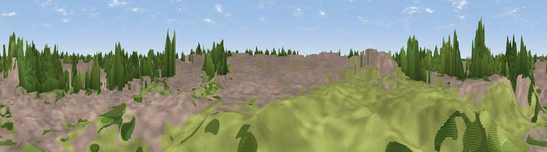

Viewpoint near Walthamstow
#45812 in England · top 83% of its area beats it · near Walthamstow · access?Where it is
The exact computed spot (TQ 38072 85511). Click the marker for map links.
Public access: no public right of way or access land is recorded at this exact spot — it may be on private land. Computed from Natural England's CRoW access layer and OpenStreetMap rights of way — not the legal definitive map. Always verify locally.
The view, rendered

A 360° render of this exact spot computed from the terrain model, tree cover and land cover — summer colours, afternoon light, calibrated against photographs of famous viewpoints. Real trees, hedges and buildings will differ in detail.
The panorama
Grey silhouette: terrain skyline in each direction (720 bearings, Earth curvature and refraction included). Dashed green: skyline with trees (+15 m) and buildings (+8 m) as obstacles. Blue strip: how far the ground is visible on each bearing.
Where the view opens
Wedge length = distance to the farthest visible ground on that bearing (vegetation-aware). Rings at 10, 25 and 50 km.
What fills the view
59% built-up · 29% woodland · 11% grassland ·
Angular shares of the visible panorama (visual magnitude), not map area. Landscape diversity 0.42 (0–1 Shannon).
Key numbers
More beautiful places nearby
The staircase of upgrades: each row has a higher view potential than everything closer. Driving times are estimates from straight-line distance, calibrated against real road routing — check an actual route before setting out.
| Place | Direction | Drive | Score |
|---|---|---|---|
| Olympic Rings | WSW · 1 km | ~2 min | 15.4 |
| Viewpoint near Walthamstow | NW · 4 km | ~9 min | 15.8 |
| Viewpoint near Greenwich | S · 5 km | ~12 min | 17.6 |
| Beckton Alps | SE · 6 km | ~13 min | 23.5 |
| Moon Hill | N · 7 km | ~14 min | 30.6 |
| Viewpoint near East Finchley | WNW · 9 km | ~18 min | 38.5 |
| Viewpoint near Erith | ESE · 15 km | ~27 min | 38.9 |
| Viewpoint near Great Warley | E · 19 km | ~33 min | 40.0 |
51.55160, -0.00997 · source: osm peak · position refined by local search. Computed location — check access rights before visiting.